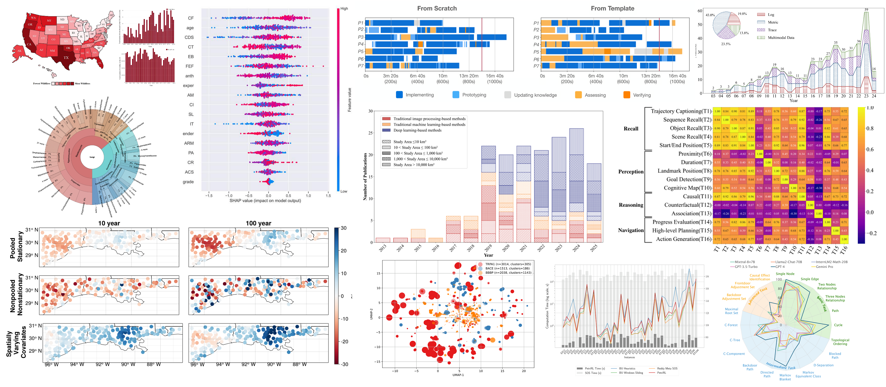
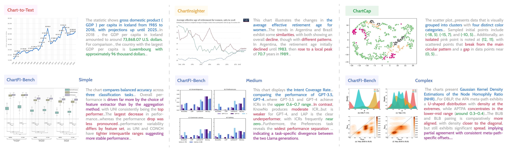

Chart descriptions are essential for accessibility, cross-modal retrieval, and assisting readers in extracting insights from complex visualizations. As multimodal large language models (MLLMs) are increasingly adopted for automated chart description generation, a critical question arises: how faithfully and insightfully do these models actually describe charts? Current benchmarks fall short on two fronts: existing datasets consist of simple, homogeneous charts paired with shallow, fact-enumerating descriptions; and prevailing metrics fail to capture the multi-faceted nature of description quality. To address these gaps, we present the Chart Faithfulness and Insightfulness Benchmark (ChartFI-Bench). We first summarize four dimensions that characterize high-quality chart descriptions: factual accuracy, salient feature emphasis, domain-informed guidance, and chart–text complementarity. Guided by these dimensions, we construct a high-quality benchmark comprising 896 chart–description pairs, which feature visually complex charts and semantically rich descriptions. Furthermore, we design four aligned evaluation metrics—Faithfulness, Coverage, Informativeness, and Acuity—to systematically assess the quality of descriptions across these dimensions. Experiments conducted on mainstream MLLMs demonstrate the effectiveness of the proposed framework and reveal common weaknesses among existing models.

Evaluation Metrics
Chart Insight Decomposition
We first decompose each chart description into fine-grained chart insights for evaluation. L2 and L3 insights are represented as structured data facts; L1 and L4 content is instead split into fine-grained sentences, each conveying a single insight.
Each structured data fact is represented as (type, parameters, measure(s), context, breakdown(s), focus).
Example
“For females, both C3 and C4 ratios show a general increase with age.”
Type
trend
Parameters
INCREASE
Measure(s)
C3 and C4 ratios
Context
N/A
Breakdown(s)
Gender
Focus
Female
01LLM-as-a-Judge Evaluation
Faithfulness
Does the description accurately reflect the chart?
Faithfulness measures how accurately the description reflects the chart without hallucinations.
How it is evaluated
Ntotal: Number of chart insights in the descriptionNerror: Number of erroneous chart insights.
02LLM-assisted Heuristic Evaluation
Coverage
How well does the description cover the reference insights?
Matches generated chart insights with reference insights.
How it is evaluated
Type-specific fact matching: compare facts using rules tailored to their types.
Schema-grounded fact normalization: normalize fact representations before comparison.
Cross-type semantic matching: identify equivalent insights expressed through different fact types.
N: Number of matched insight pairs|M|: Number of model-generated chart insights|R|: Number of reference chart insights
03LLM-assisted Heuristic Evaluation
Informativeness
Does the description provide high-level semantic insights?
Informativeness measures whether the description highlights high-level semantic insights rather than merely stating obvious low-level visual details.
How it is evaluated
Semantic decomposition: Decompose descriptions into insights across semantic levels.
Weight initialization: assign a baseline weight to each semantic level.
Adaptive modulation: adjust weights using the reference description’s distribution across levels, then average the weights of generated insights.
bl: Base weight assigned to semantic levelpl: Proportion of facts at level l in the reference descriptionwl: Normalized context-aware weight for level l|Y|: Total number of facts in the generated description
04LLM-as-a-Judge Evaluation
Acuity
Does the description connect what the chart shows with what it means?
Acuity measures whether the description bridges the gap between what the chart shows and what it means.
How it is evaluated
Each applicable subdimension is rated on a 5-point scale:
Domain Knowledge Accuracy
Incorporates technically accurate and pertinent domain concepts.
Knowledge Integration Efficiency
Enhances reader understanding without unnecessary elaboration.
Insight Prioritization
Emphasizes analytically significant findings over merely visually prominent ones.
Etiological Explanation
Provides plausible, domain-grounded explanations for why phenomena emerge.
Multivariate Synthesis
Synthesizes information across variables or subplots to derive higher-order insights.
The overall Acuity score aggregates evaluations across five subdimensions.
Semantic Coverage refers to the four-level semantic content for chart descriptions: L1, chart construction; L2, statistical summaries; L3, perceptual and cognitive observations; L4, contextual and domain-specific insights.

Descriptions are color-coded by semantic level:
L1 Chart construction
L2 Statistical summaries
L3 Perceptual and cognitive observations
L4 Contextual and domain-specific insights
Citation
If you use ChartFI, please cite our paper.
@article{wang2026chartfi,
title={ChartFI: Benchmarking Faithfulness and Insightfulness of Chart Descriptions from Multimodal Large Language Models},
author={Wang, Fen and Shao, Zekai and Kang, Qiman and Hu, Chunran and Zhang, Zhixuan and Xie, Lexu and Liu, Chao and Chen, Siming},
journal={arXiv preprint arXiv:2605.23694},
year={2026},
url={https://arxiv.org/abs/2605.23694}
}